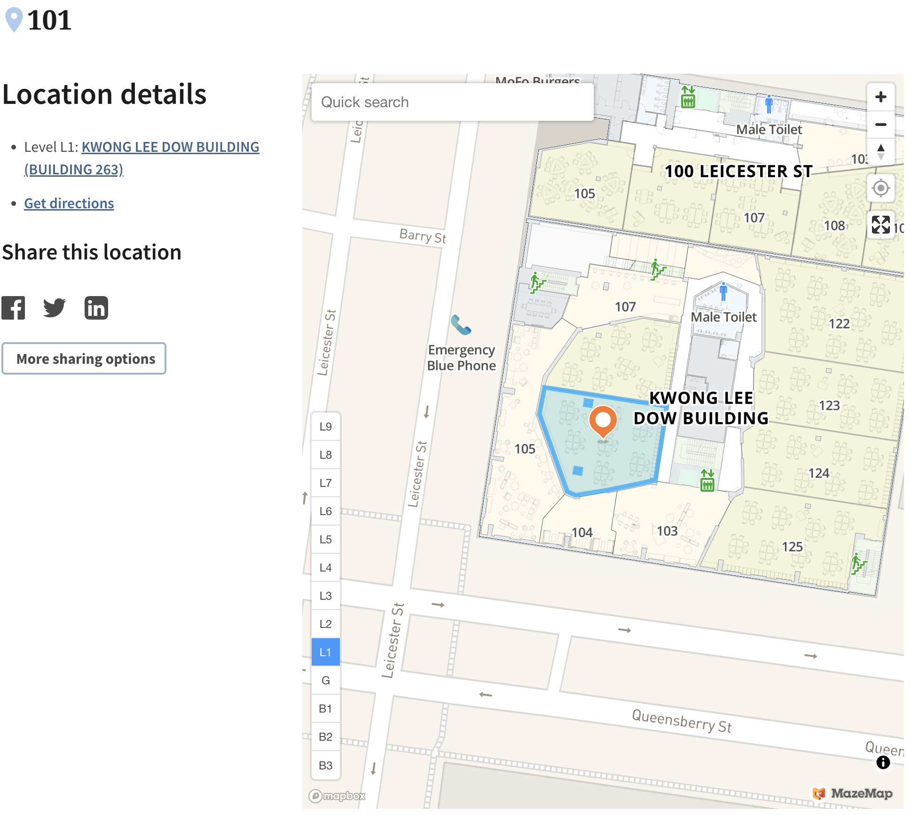

Assessment Overview #
Assessment structure #
Your assessment for this subject comprises the following:
- a 50 minute closed book mid-semester exam (15%)
- an individual assignment (25%)
- a 2 hour closed book final exam (60%)
Hurdle requirement: To pass this subject students must pass the end of semester examination.
In the following sections, details are provided (and will be populated throughout semester) about those assessments.
Mid-semester exam #
Date #
The mid-semester exam will take place online on Monday 28 August 2023 between 2.30pm and 3.30pm. Please arrive by 2.15pm at the latest. The exam won’t start before 2.30pm, but it may start later, so please make sure you are available until 4pm.
Type #
The mid-semester exam will be a “traditional”, closed book, pen on paper exam.
You will be allowed to bring one A4 sheet of notes, double sided. You can write as much as you want on that one sheet of paper (text and/or formulas), on both sides, but it cannot be more than one A4 sheet.
You will be allowed to bring a Casio FX-82 (with or without suffix) calculator.
Venue #

Duration #
50 minutes sharp, plus 5 minutes reading time. You are not allowed to write during reading time.
Scope #
The mid-semester exam will assess contents from Modules 1 to 4 (lectures of weeks 1-4) and associated tutorial exercises, readings, spreadsheets, and course contents. This focuses on the risk and insurance, as well as all of reserving components of the subject.
Practice #
The exam will be of the “traditional” type, in line if the IFoA CM2A exams; see
below for details.
Additional details #
See
General Advice for further details.
Individual assignment #
Assignment instructions #
The assignment will be an assignment which will need to be performed in Excel, which will be specifically assessed.
The assignment will assess skills from Reserving and Stochastic returns (TBC) and associated tutorial exercises, readings, spreadsheets, and course contents. Communication skills will also be assessed.
Additional details and instructions will be available later (around mid-semester exam time).
Assignment submission #
Assignment submission is via the LMS Assignment Submission link for all written assignments. Please refer to the Turnitin section of the LMS website via for detailed submission instructions if needed.
Please note that you are required to keep a copy of your assignment after it has been submitted as you must be able to produce a copy of your assignment at the request of teaching staff at any time after the submission due date.
Penalties for Late Submission #
In order to ensure equality for all students, assignments and examinations (where relevant) must be submitted by specified deadlines. Late assignments, where approval for late submission has not been given, will be penalised at the rate of 20% of the total mark per day, for up to 5 days, at which time a mark of zero will be given.
Students with a genuine and acceptable reason for not completing an assignment (or other assessment task), such as illness, can apply for special consideration. Special Consideration assists students who have been significantly affected by illness or other serious circumstances during the semester. The following website contains detailed information relating to who can apply for Special Consideration and the process for making an application: http://students.unimelb.edu.au/admin/special
Final exam #
Type #
The final exam will be a “traditional”, closed book, pen on paper exam.
You will be allowed to bring one A4 sheet of notes, double sided. You can write as much as you want on that one sheet of paper (text and/or formulas), on both sides, but it cannot be more than one A4 sheet.
You will be allowed to bring a Casio FX-82 (with or without suffix) calculator.
Additional instructions for the exam are on the cover sheets ( UG/ PG)
Date #
The date of the final exam is published on the
University of Melbourne Exams Timetable website.
Duration #
2 hours, plus 15 minutes of reading time.
Scope #
The final exam will assess all contents of the course, with particular focus on the materials taught beyond week 6. The questions will focus particlarly on:
- Modules 1 and 5 (and associated knowledge which may come from Modules 2-4)
- Modules 7 to 12
The material from the following slides from Modules 7 to 12 is not required for the final exam:
- Module 7: p. 54-56
- Module 9: p. 10, p. 23, and anything directly related to Excel, e.g., how to implement a procedure in Excel (however, you may need to understand the procedure, i.e., know the theoretical basis).
- Module 10: p. 25 and p. 27
- Module 11: p. 23-28
- Module 12: p. 9-11
Examinable materials include associated tutorial questions (it is important that you understand the details of the examples /questions in these materials and that you are able to replicate the solutions independently and efficiently), associated mandatory readings, as well as the assignment task and the mid-semester exam.
Marks and allocation to topics #
Will be available later.
Exam consultation #
Will be announced later.
Please see below the schdule of extra consultation times for the final exam.
- October 18, 13:00-15:00, FBE 365 (Sam)
- October 20, 15:00-17:00, FBE 365 (Sam)
- October 24, 13:00-15:00, FBE 308 (Aileen)
- October 27, 11:00-12:00, FBE 318 (Yuyu)
Additional details #
See also the
University of Melbourne exam webpage for students.
Precision of numerical answers #
Students often ask about the required significant figures / decimal places.
If it is not specified:
- In an open question we will look at the reasoning so you should not be too worried about it (within reason). Use, say, 5 significant figures/digits
\(*\) - Otherwise the precision needs to match that of the possible answers (if we have 5 significant figures (
\(*\)) in the answers then work with 6, say).
\(*\)Please move away from talking about decimal places - this does not take the scale of your problem into account. The correct way to think about this is in terms of significant figures/digits. For more details, see e.g.Wikipediaorthis video from Khan academy.
Exam preparation #
Assessments in this course will generally:
- test whether you can apply the methods in a realistic environment (in particular, with data and spreadsheets);
- test whether you understand the theory behind those methods, and can explain the associated strengths and limitations.
To prepare for this exam we suggest you review the tutorial exercises and
past CM2 exam questions. You should also make sure you read all prescribed readings and have understood the main arguments.
More specifically:
- Finalise your own summaries and formula sheets in preparation for the exam.
- I recommend you review carefully the
Detailed Learning Outcomes pages: - Of course, review also all tutorial exercises. For each question:
- What skill(s) is this exercise testing?
- Where are the required concepts in your summaries? in your formula sheets?
- What did you find challenging in this exercise, and how comfortable are you with this now?
General Advice #
Past CM2 exams #
This subject is one of three subjects leading to exemption from the IFoA CM2 exam; see also the
SILO page. This provides with a very extensive range of practice exams. Note:
- CM2A exams are closed book pen on paper exams
- CM2B exams are Excel based
- Past exams and solutions are downloadable
here
Tips #
Remember there are different ways of answering a multiple choice/answer question (especially if it involves numbers):
- Work out the answer as if you were in a standard pen and paper invigilated exam, then see if the answer is in the list.
- Work out the answer with tools that would not otherwise be available, such as Excel spreadsheet, R, or even the internet. (but be careful not to collude or otherwise be guilty of academic misconduct – check https://academicintegrity.unimelb.edu.au/ for further details)
- In some circumstances, it may be easier to simply “plug back” the different answers to see which one works. Don’t forget these three options exist for multiple choice/answer open book exams! Hence make sure you have Excel and R available and working before the exam starts.
Furthermore, some more advice / exam technique / tips:
- Read attentively the exam questions at least twice before attempting the question. Work out what skills you are meant to demonstrate. Make sure you understand what is being asked in the question – consider key words indicating what you have to do. When you have finished, re-read the question to make sure you have not missed anything.
- Key is to demonstrate understanding.
- Attempt all questions where possible.
- If you run out of time, explain how to you would approach the task (where possible). If this is right this should give you marks.
- Do questions you are most confident with first. Prioritise.
- Observe the number of marks allocated. Manage time accordingly. Reassess your available time regularly (say, half way through for a 1 hour exam, and perhaps 2 times for a 2 hour exam). For instance, if the exam is one hour and there are 100 marks, then you have 36 seconds per mark.
Pay close attention to the wording of the question - this is not chosen randomly. Pay particular attention to the verb (for instance: “State” and “Show” do not mean the same thing. With “State” you just need to give the answer, with “Show” you need to actually prove the answer) and adverb if any (for instance: “briefly” is not the same as “in detail”). Examples are:
- ‘…Justify your answer’
- ‘Find’
- ‘Explain in words’
- ‘Derive’
- ‘Show that’
- ‘Briefly list’
- ‘Present in detail…’
- ‘Briefly explain’
- ‘Briefly describe’
- ‘State (without justification) 4 examples of …’